မိန်းကလေးတွေရဲ့ အစွမ်းအစကို လူ့ပတ်ဝန်းကျင်က သိပ်အထင်ကြီးလေ့ မရှိကြပါဘူး။ အမျိုးသမီး သိပ္ပံပညာရှင်တွေ ဆိုလဲ သိပ္ပံ ပညာရှင် အသိုင်းအဝိုင်းမှာကို သိပ်အထင်ကြီး မခံကြရပါဘူး။ ဒါပေမယ့် ဆယ်ကျော်သက် မိန်းကလေးငယ်လေး ၁၂ ယောက် ပါဝင်တဲ့ အင်ဂျင်နီယာ လောင်းလျှာများအဖွဲ့ဟာ အိမ်ခြေမဲ့တွေ ဆောင်းတွင်းမှာ နွေးထွေးစွာ နေနိုင်စေဖို့ ဖြုတ်လို့တပ်လို့ရတဲ့ ရွှေ့ပြောင်းတဲအိမ်ငယ်လေးတွေကို တီထွင်ခဲ့ကြပါတယ်။
ဒီတဲအိမ်ကို တီထွင်ခဲ့ကြတဲ့ ဆယ်ကျော်သက် မိန်းမပျိုလေး ၁၂ ဦးကတော့ အမေရိကန် ပြည်ထောင်စု၊ ကာလီဖိုးနီးယား ပြည်နယ် ဆန်ဖာနန်ဒိုမြို့က အထက်တန်းကျောင်းက (San Fernando High School) ကျောင်းသူလေးတွေပဲ ဖြစ်ပါတယ်။ သူတို့တီထွင်ဖို့ လိုအပ်တဲ့ ငွေကြေးထောက်ပံ့တဲ့ အဖွဲ့ကတော့ DIY Girls ဆိုတဲ့ အဖွဲ့ပဲ ဖြစ်ပါတယ်။
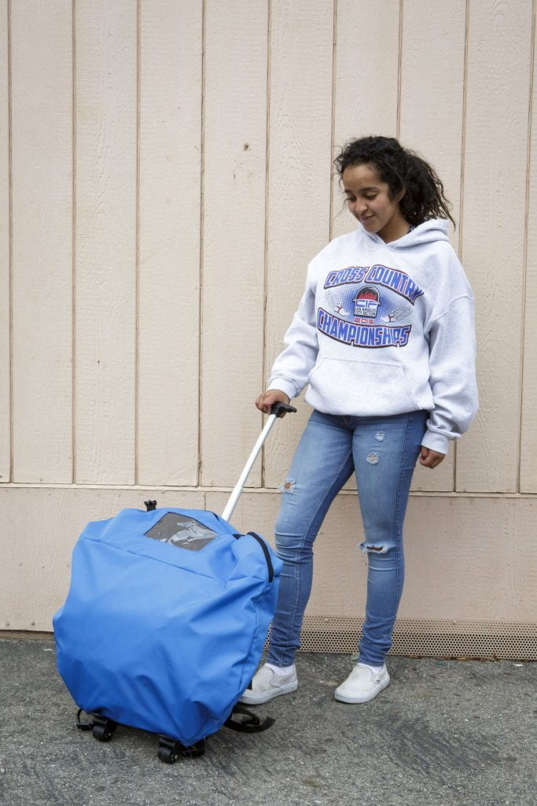
အလွယ်တကူ ခေါက်ပြီး သယ်လို့ရပါတယ်ခေါက်ပြီး ကျောမှာလဲ ပိုးသွားလို့ ရပါတယ်ဒီကလေးမလေးတွေ တီထွင်ခဲ့တဲ့ တဲအိမ်လေးဟာ အလွယ်တကူ ဖြုတ်လို့ တပ်လို့ရတဲ့ တဲအိမ်လေးဖြစ်ပြီး ပလတ်စတစ်စတွေနဲ့ ပြုလုပ်ထားတာ ဖြစ်ပါတယ်။ camping ထွက်ရင် အသုံးပြုတဲ့ တဲအိမ်မျိုးပါ။ ဒီတဲအိမ်ရဲ့ ထူးခြားချက်ကတော့ နေရောင်ခြည် စွမ်းအင်ကို အသုံးပြုပြီး ဓါတ်အားသွင်းနိုင်၊ ပိုးသန့်စင်နိုင်အောင် ပြုလုပ်ထားတာပဲ ဖြစ်ပါတယ်။ နောက်ပြီး ခေါက်လိုက်ရင် ကျောပိုးအိတ်ထဲ ထည့်သယ်သွားနိုင်လောက်တဲ့ အထိလဲ သေးငယ်အောင် ထုပ်ပိုးထားပါတယ်။
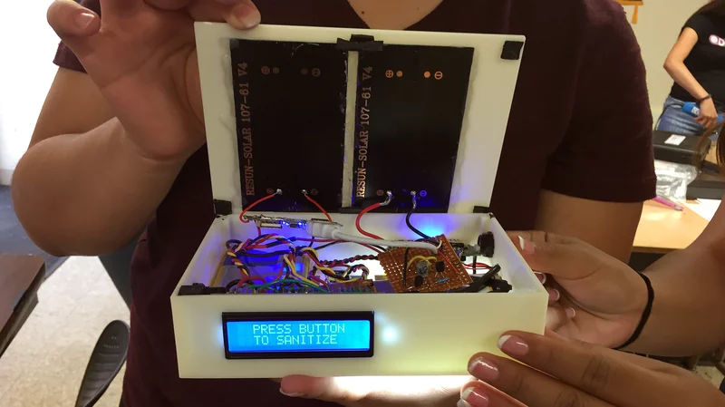
UV အလင်းနဲ့ ပိုးသတ်ပေးမယ့် စက်ကလေးဒီ တီထွင်မှုအတွက် ငွေကြေးထောက်ပံ့ပေးတဲ့ DIY Girls အဖွဲ့ဟာ သိပ္ပံနဲ့ နည်းပညာကို စိတ်ဝင်စားတဲ့ မိန်းကလေးတွေကို ကူညီပံ့ပိုးပေးဖို့ ဖွဲ့စည်းထားတဲ့ အဖွဲ့ဖြစ်ပါတယ်။ ဒီအဖွဲ့က သိပ္ပံနဲ့ နည်းပညာ စိတ်ဝင်စားတဲ့ မိန်းကလေးတွေ အချင်းချင်းလဲ ပေါင်းစုမိပြီး ရင်းနှီးတဲ့ ဆက်ဆံရေး ထူထောင်ပေးဖို့နဲ့ အချင်းချင်း ပူးပေါင်းဆောင်ရွက်မှု အားကောင်းလာအောင်လဲ ကူညီပံ့ပိုးပေးပါတယ်။
ဒီ တဲအိမ်ကို စတင် ပုံစံထုတ်ချိန်က ဒီမိန်းကလေးငယ်တွေရဲ့ စိတ်မှာ ဘယ်လို လုပ်ငန်းဆောင်တာ လုပ်ဆောင်မှုမျိုးတွေ ပါအောင် ဒီဇိုင်းထုတ်မလဲ ဆိုတာ ကြိုတင်စဉ်းစား ထားပြီးနေကြပါပြီ။ သူတို့ ပါဝင်စေချင်တဲ့ လုပ်ငန်းဆောင်တာတွေကတော့ အလွယ်တကူ သယ်ဆောင်နိုင်ရမယ်။ ညမီးပေးဖို့ LED မီးပါရမယ်။ ပိုးသတ်ဖို့ UV မီးပါရမယ်။ နောက်ပြီး သူတို့ရဲ့ ဒီဇိုင်းကို မူပိုင်မှတ်ပုံတင် ထားဖို့လဲ စိတ်ကူးထားကြပါတယ်။ အဓိကက ဈေးသက်သက်သာသာနဲ့ အိမ်ယာမဲ့တွေ လက်လှမ်းမှီနိုင်စေချင် ကြလို့ပါ။
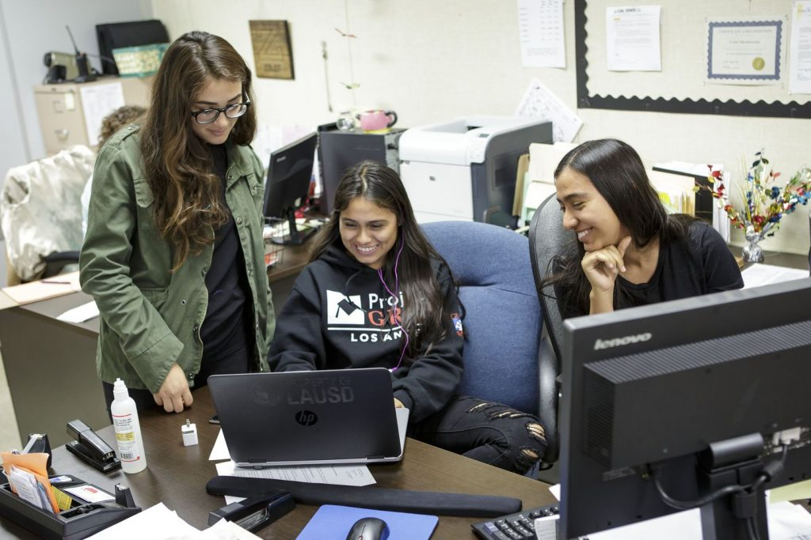
ဒီဇိုင်းထုတ်နေကြစဉ်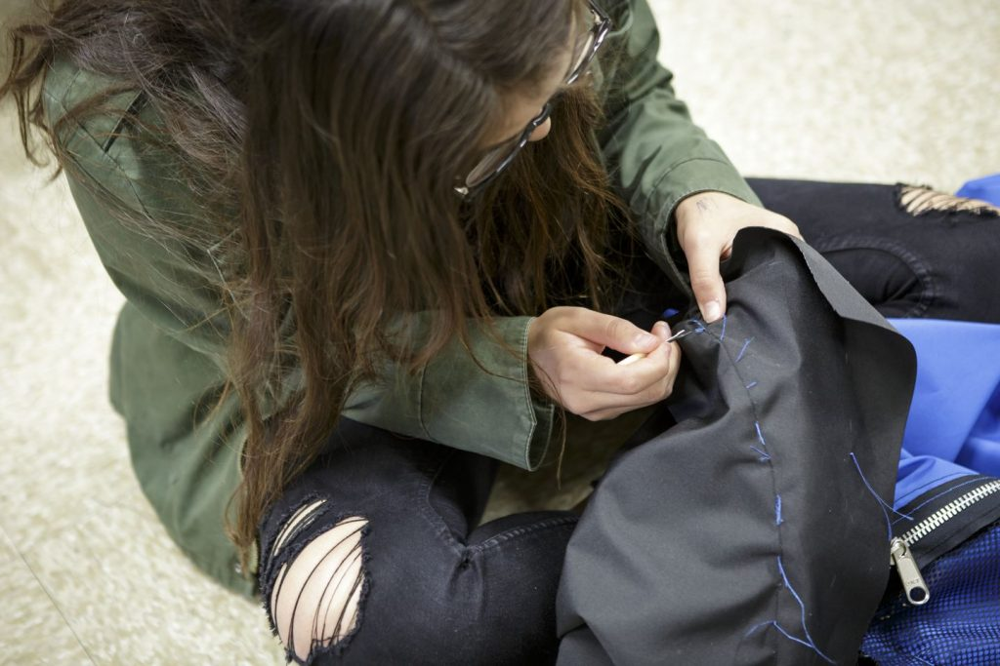
တဲအိမ်ကို လက်နဲ့ ချုပ်ကြပါတယ်သူတို့ရဲ့ အကြံကို တင်ပြတဲ့အခါ နာမည်ကျော် MIT စက်မှု တက္ကသိုလ်ကြီးဆီကနေ အမေရိကန် ဒေါ်လာ ၁၀,၀၀၀ အထောက်အပံ့ ရရှိခဲ့ ကြပါတယ်။
MIT က သူတို့ရဲ့ တီထွင်မှုကို လက်တွေ့ပြသဖို့ တက္ကသိုလ်ကို ဖိတ်ကြားခဲ့ပါတယ်။ ဒါပေမယ့် ကလေးမ လေးတွေမှာ လေယာဉ်လက်မှတ်တောင် မတတ်နိုင် ရှာကြပါဘူး။ ဒီအခါ စေတနာရှင်တွေက လေယာဉ်လက်မှတ်ဖိုးနဲ့ ဟိုတယ်ဖိုးတွေ ဝိုင်းဝန်းလှူဒါန်းကလို့ သူတို့ရဲ့ တီထွင်ဖန်းတီး အောင်မြင်မှုကို နာမည်ကျော် တက္ကသိုလ်ကြီးက ထိပ်တန်း အင်ဂျင်နီယာတွေ ရှေ့မှာ ထုတ်ဖေါ်တင်ပြခွင့် ရခဲ့ကြပါတယ်။
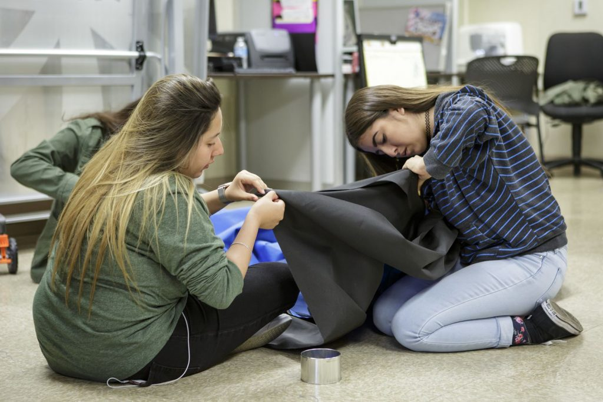
အသေးစိတ် ချုပ်ကြရပါတယ်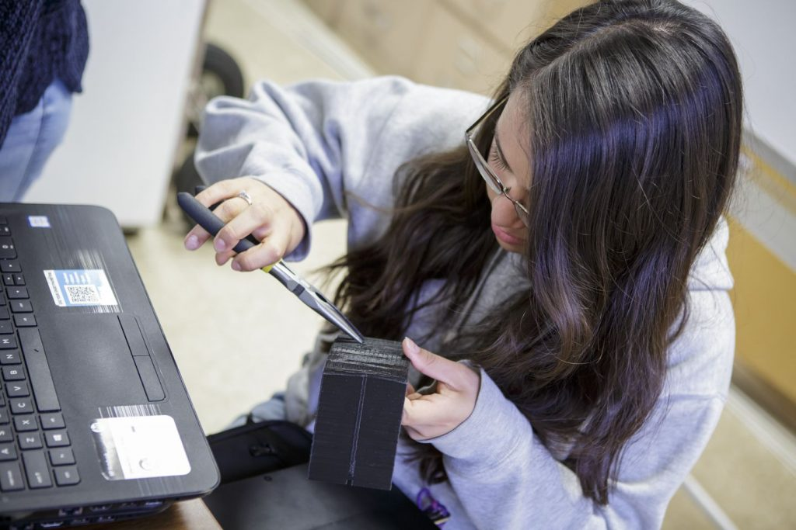
ဆိုလာပြား တပ်မယ့် ပလပ်စတစ်ဘူးကို ဒီဇိုင်းလုပ်နေပုံဒီတဲအိမ်ရဲ့ အသားကို ရေမစိမ့်နိုင်တဲ့၊ ပြီးတော့ အပူထိန်းနိုင်တဲ့ မိုးကာစနဲ့ ချုပ်ထားပါတယ်။ ဆောင်းတွင်းဆို နွေးအောင်လို့ပါ။ ဆိုလာစွမ်းအင် အသုံးပြုပြီးတော့လဲ လျှပ်စစ်ဓါတ်အား သွင်းတာ၊ ပိုးသန့်စင်တာ ပြုလုပ်ပေးနိုင်အောင်လဲ ဖန်တီးပေး ထားပါတယ်။
ဒီအဖွဲ့မှာ ပါဝင်တဲ့ ပေါ်လာ ဗာလ်တဲယားက “ကျွန်မတို့ ကျောင်းက ကျွန်မနဲ့ ကျွန်မသူငယ်ချင်းက ကားလ်ကူးလပ်စ Calculus သင်တဲ့ အတန်းမှာ မိန်းကလေး ဆိုလို့ ကျွန်မတို့ နှစ်ယောက်ထဲ ရှိတာပါ။ ကျန်တာအကုန်လုံးက ယောက်ကျားလေးတွေ ချည်းပဲ။ ဒါပေမယ့် ကျွန်မတို့က တစ်နေ့မှာ ဒါကို ပြောင်းပြန် လှန်ပစ်နိုင်ဖို့ ကြိုးစားကြပါမယ်” လို့ ပြောပြခဲ့ပါတယ်။
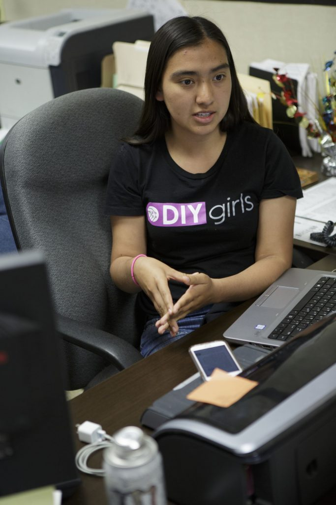
အဖွဲ့ဝင် တစ်ဦး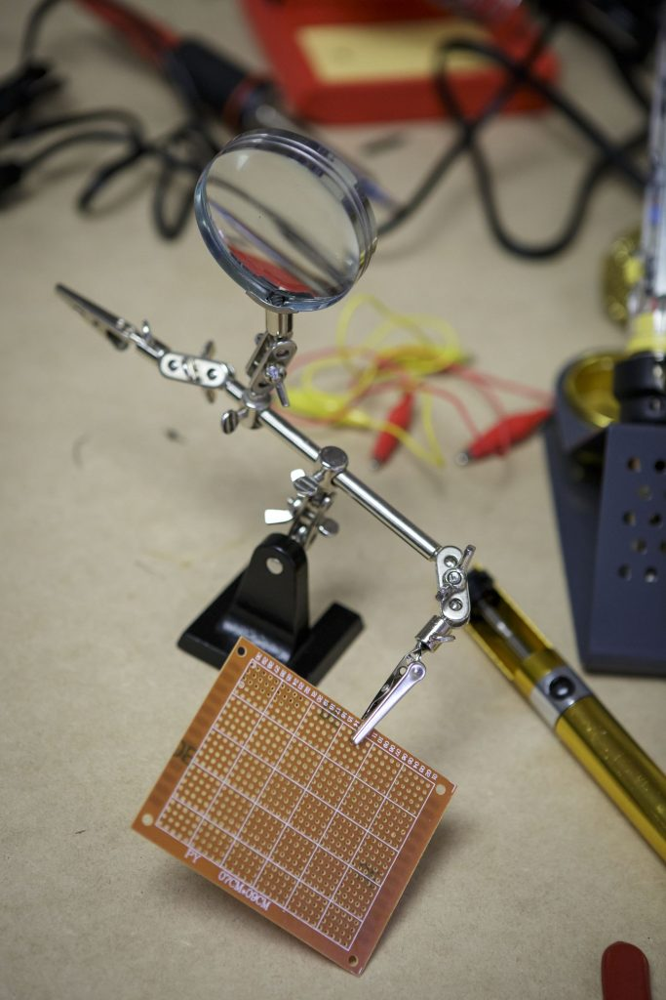
အသုံးပြုမယ့် ပစ္စည်းတွေကို အရင် သေချာအောင် စမ်းသပ်မှု ပြုရပါတယ်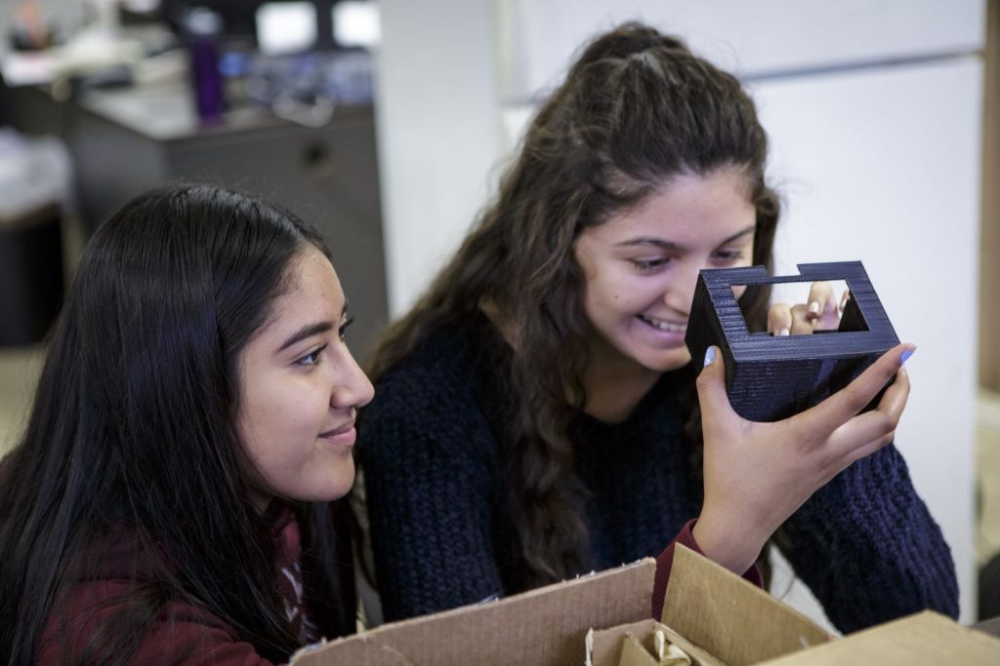
ဆိုလာပြား တပ်မယ့် ပလပ်စတစ်ဘူးကိုလဲ ကိုယ်တိုင် ပုံထုတ် ကြတာပါ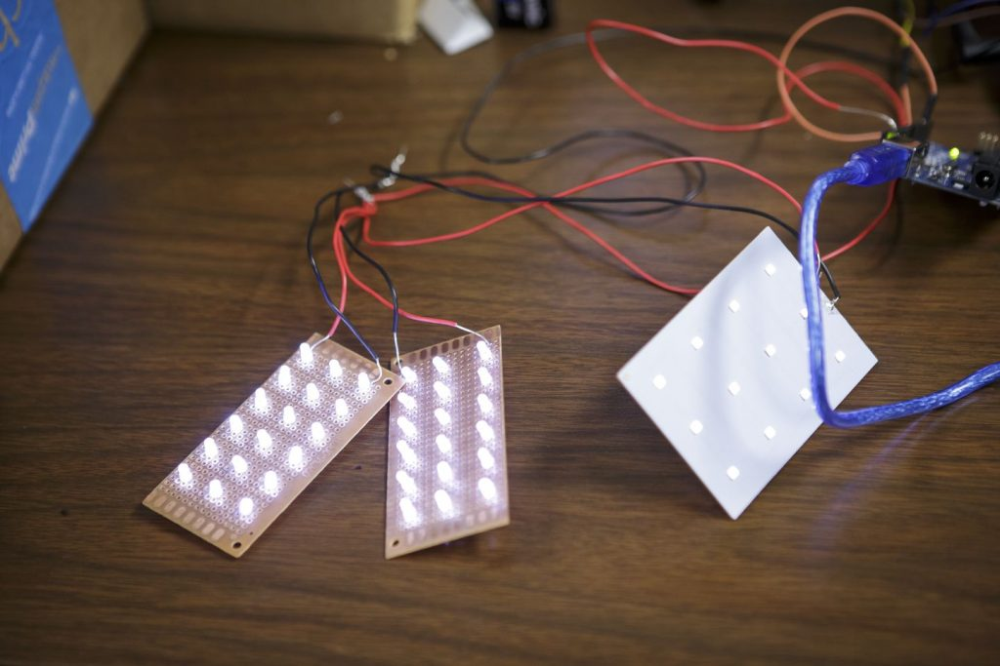
တပ်ဆင်မယ့် LED မီးလုံးဒီဇိုင်း စမ်းသပ်နေပုံ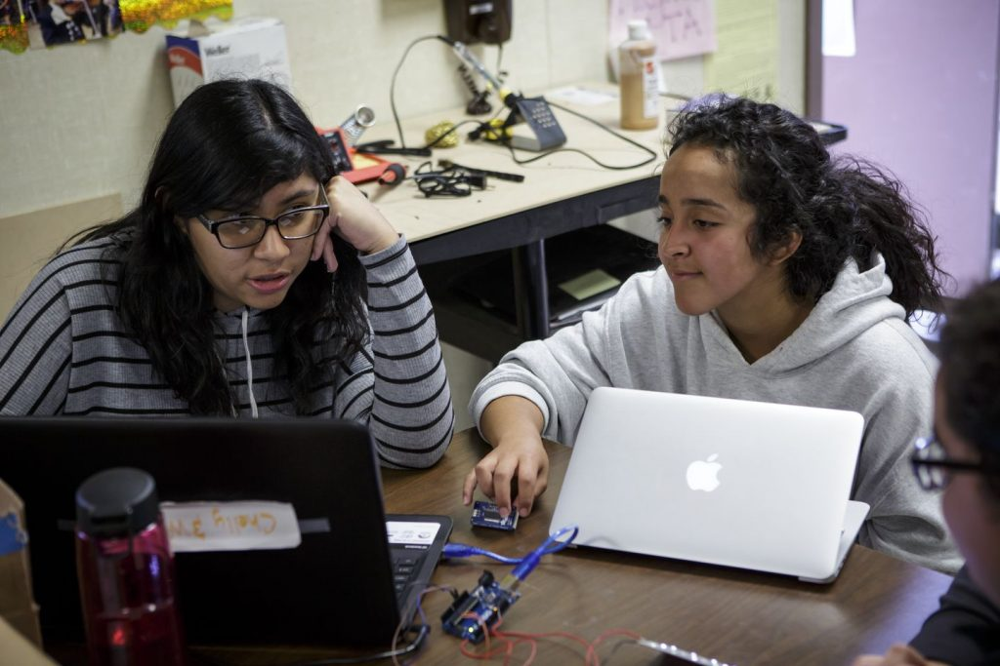
အကြံထုတ်နေကြစဉ်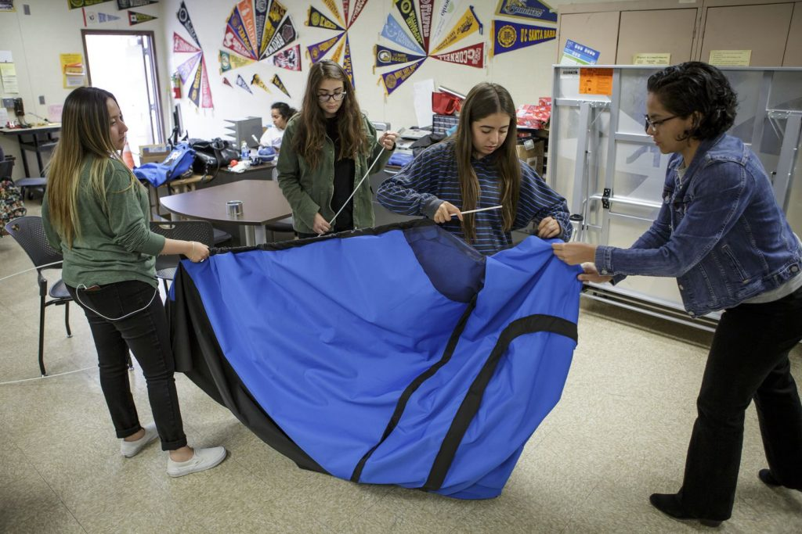
တဲအိမ်ကို တပ်ဆင်နေစဉ်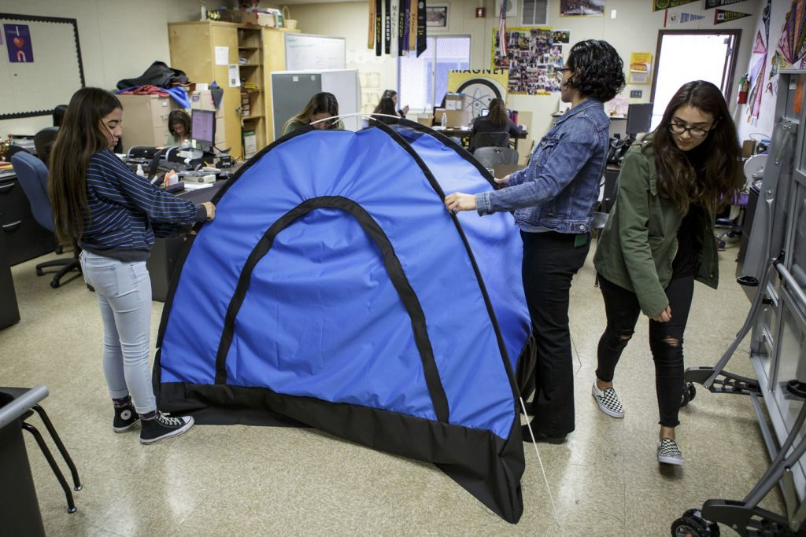
တဲအိမ် ဆင်ပြီးသွားတဲ့နောက်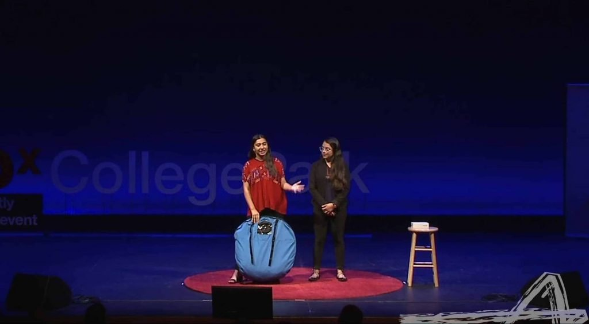
MIT မှာ သူတို့ရဲ့ တီထွင်ဖန်တီးမှုကို တင်ပြနေစဉ်Reference:
How 12 teens invented a solar-powered tent for the homeless | Mashables